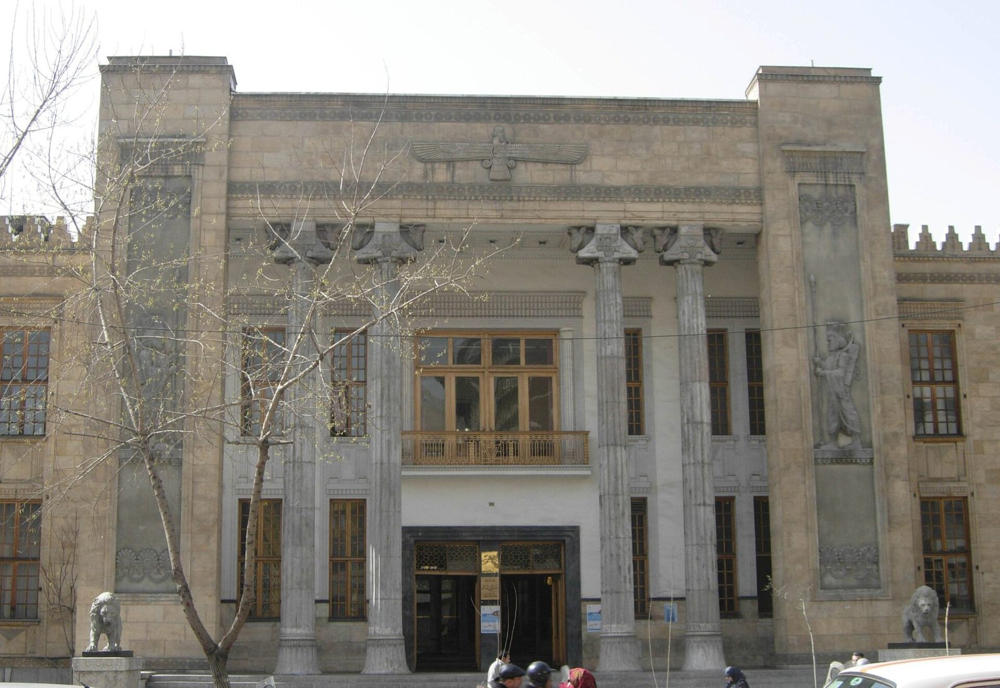
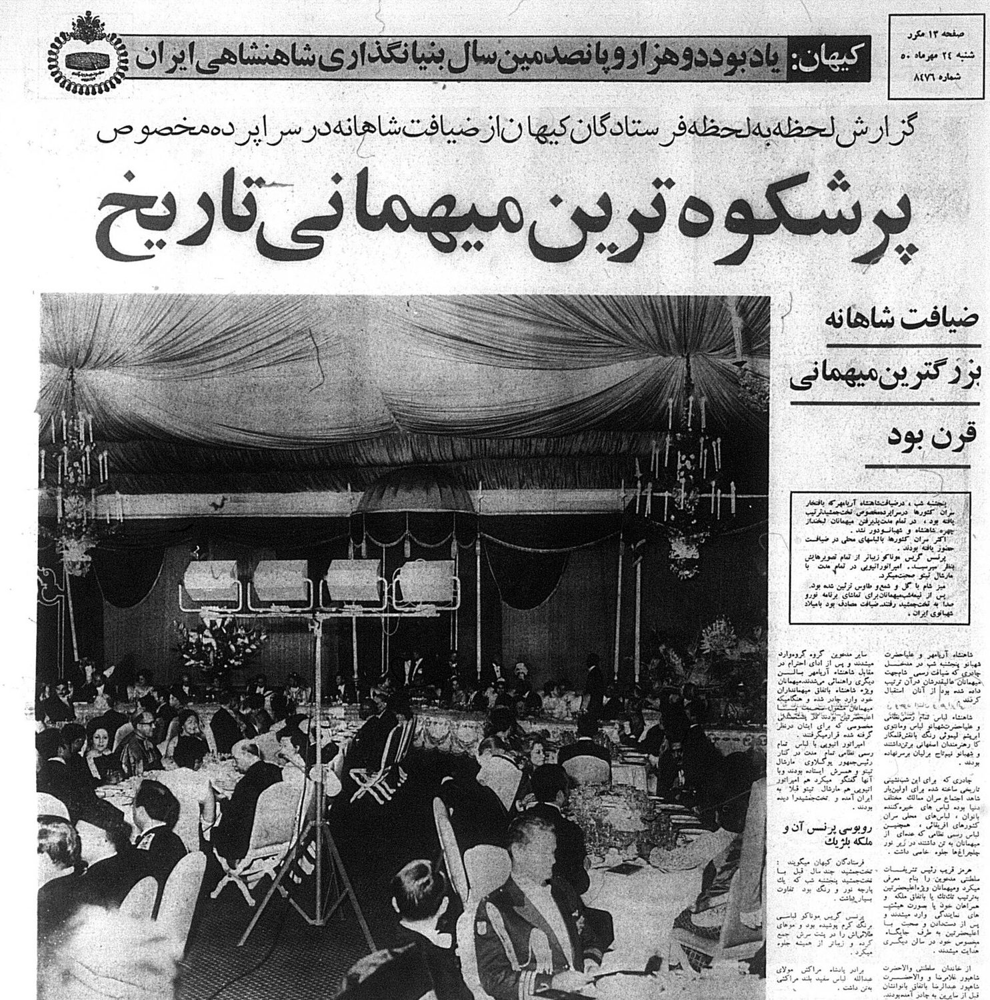
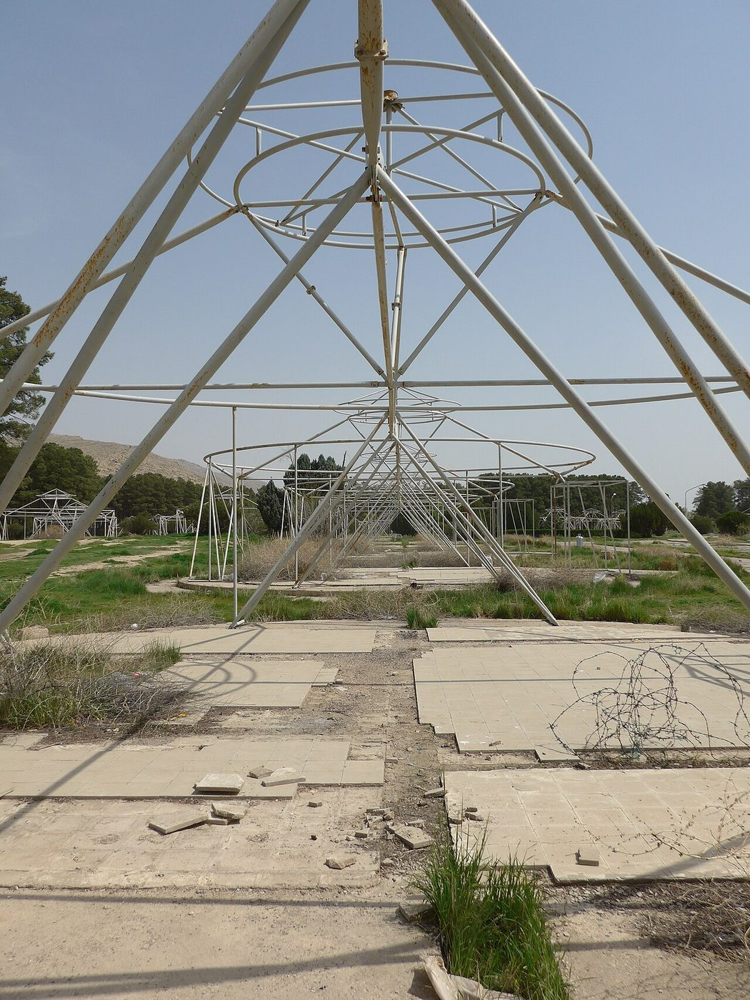
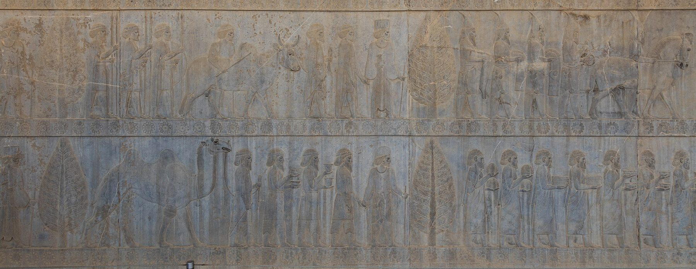
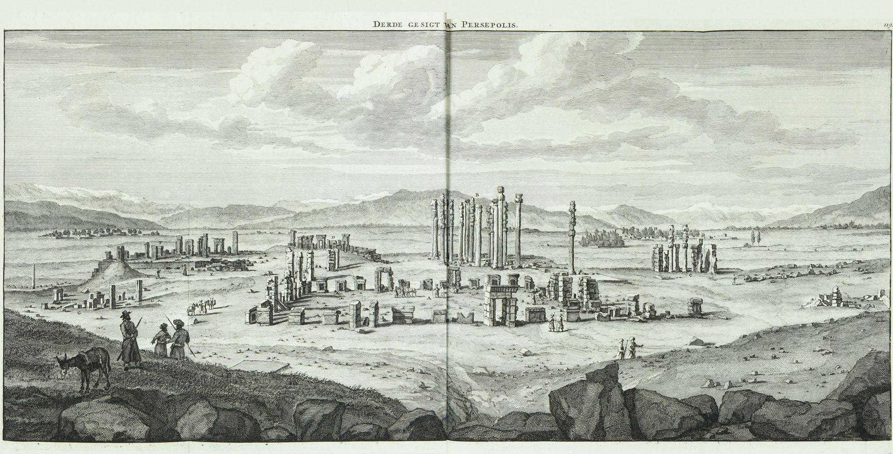
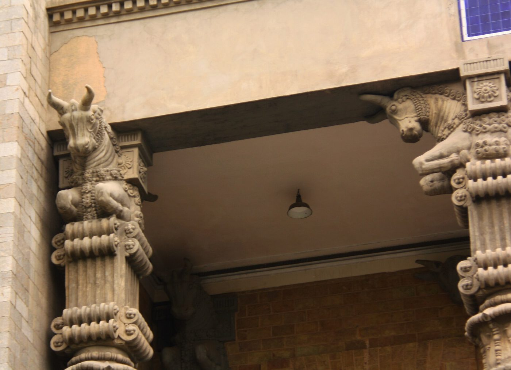
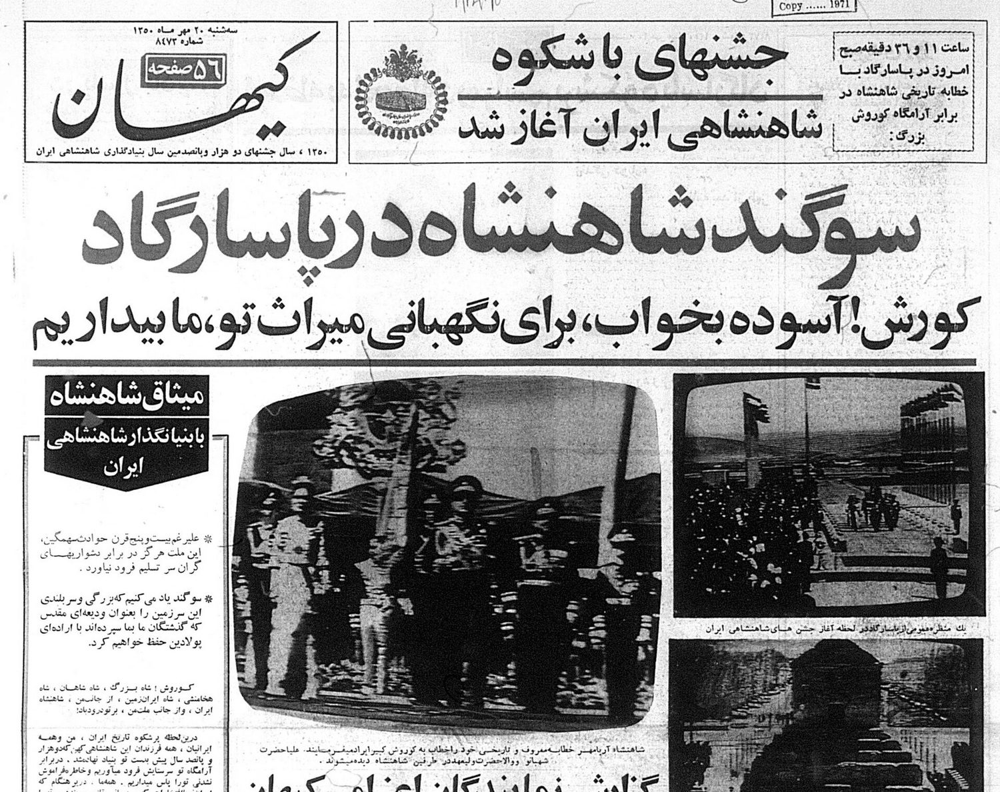
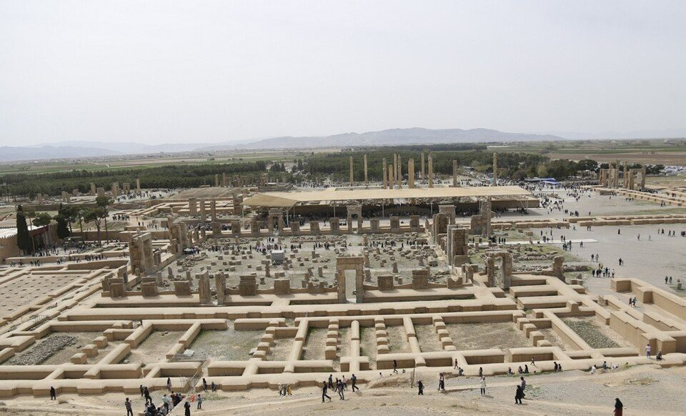

Unit 2 · Persepolis · Lesson 14
Differing interpretations and representations of Persepolis
Why has Persepolis meant such different things to the people who wrote about it, drew it, copied it and celebrated it?
Year 11 Ancient History · Present with → or space · Read on a phone with R

Connect · 3 minutes · everyone writes one line · press K for the timer
The burning of 330 BCE: planned, or not?
One piece of evidence, with its source.
One piece of evidence, with its source.
The treasure had been carried away first, on thousands of pack animals (Diodorus; Plutarch), and, according to Plutarch, Alexander stayed four months, from about January to about May 330 BCE, before the fire. Arrian describes a deliberate act that Parmenio advised against.
Diodorus, Curtius and Plutarch all tell the story of a drunken feast at which Thaïs urged the burning, and Plutarch and Curtius say Alexander regretted it soon after.
Today: the burning is one interpretation of Persepolis. Today you meet the representations, from the reliefs to 1971.
Learning intentions and success criteria · 2 minutes
Today’s goals
- understand how Persepolis has been interpreted and represented over time
- explain why representations of Persepolis differ
- describe four representations of Persepolis from different periods
- explain the purpose and context behind each
- write an interpretation paragraph explaining why representations differ
Syllabus outcomes: AH-11-01 explains continuity and change in the ancient world · AH-11-06 explains differing interpretations and representations of the past · AH-11-07 communicates historical understanding, applying historical knowledge, terms and concepts. Life Skills: AH-LS-09 identifies different interpretations of the past · AH-LS-10 compares representations of the past.
Note-making · the same routine as always
How to structure your notes
questions and key terms, written after
short phrases, arrows (→ leads to), abbreviations (c. = about; rep. = representation)
- 1One page for notes, one for the gridThe gallery grid is your second set of notes today: keep it with this page.
- 2Listen and look, then writePhrases, not sentences. For every representation: who made it, and when.
- 3Write your own notes at the ✎ checkpointThen compare with the model notes, one row at a time. Add what you missed in a second colour.
- 4Write the cue questions afterwardsUse exam verbs: explain, analyse, assess. To revise, cover your notes and answer the cues.
- 5Finish with a three-sentence summaryOne checkpoint today: Persepolis remembered and the 1971 celebration. Your paragraph is the big piece of writing.
Key vocabulary · add to the unit word wall
Words for today
| Thinking about the past | Meaning |
|---|---|
| Interpretation | A historian’s explanation or judgement about the past, based on evidence. |
| Representation | A depiction of the past (in art, writing, ceremony or buildings) shaped by its maker’s time and purpose. |
| Ideology | A set of ideas used to explain and justify power. |
| Premeditated | Planned in advance. |
| Persepolis remembered | Meaning |
|---|---|
| Takht-e Jamshid | ‘Throne of Jamshid’ — the local Persian name for the ruins, after a legendary king. |
| Pahlavi dynasty | The family that ruled Iran from 1925 to 1979 (Reza Shah and Mohammad Reza Shah). |
| World Heritage Site | A place listed by UNESCO as of outstanding value to humanity; Persepolis was listed in 1979. |
| Nowruz | The Persian New Year festival; some scholars have argued Persepolis was built for it, others find no evidence. |
1 · Remembering Persepolis · I do — 2,500 years in seven steps
Persepolis remembered: who has shown it, and how?
- c. 518–330 BCEIts builders: the reliefs show the empire as its kings wanted it seen, its peoples bringing gifts or tribute in order.
- 330 BCE →Its conquerors: Alexander burns the palaces; Greek and Roman writers tell the story about 270–470 years later.
- later centuriesLocal memory: a ruin for about two thousand years, explained by legends: Takht-e Jamshid, ‘Throne of Jamshid’, or Chehel Minar, ‘forty columns’.
- 1300s–1711European travellers: described from the 1300s; in 1618 a Spanish ambassador arrives with Diodorus in his hand; Cornelis de Bruijn’s drawings are published in 1711.
- 1930sThe Pahlavi state: under Reza Shah, a heritage law (1930), Persepolis listed as a national monument (1931), excavations (1931–39), and its columns copied on new buildings in Tehran.
- 1971A celebration: Mohammad Reza Shah marks 2,500 years of Iranian monarchy beside the ruins.
- 1979 →A revolution and a listing: the Islamic Republic replaces the monarchy; UNESCO lists Persepolis as a World Heritage Site; today crowds visit at Nowruz.
1 · Remembering Persepolis · I do — think aloud: what did it represent, and why then?
October 1971: a party for 2,500 years of monarchy

- 1What happened?12–16 October 1971: guests from 69 states in a tent city beside the ruins (three huge royal tents and 59 smaller ones), a banquet, and a parade of soldiers dressed as the armies of Iran’s past (TIME, 1971: “an hour-long parade recalled Iran’s many dynasties”).
- 2What did it represent?The Shah as the heir of Cyrus: a 2026 review says the ceremony presented him as “the latest incarnation of 2,500 years of dynastic Persian rule”. The Cyrus Cylinder was its official symbol.
- 3Why then?Oil wealth and fast modernisation, and a message for the world: TIME reported that the Shah wanted the celebration to be “a sign to the rest of the world that Iran is again a nation equal to all the others …”.
Is the celebration better evidence of Persepolis in 500 BCE, or of Iran in 1971?
Of Iran in 1971. It shows almost nothing new about the ancient city, but a great deal about how the Pahlavi state wanted itself and its monarchy to be seen, at home and abroad.
1 · Remembering Persepolis · I do — think aloud: how did its critics represent it?
A celebration of the nation, or of the monarchy?
- 1CostTIME (1971): “The cost was $100 million, more or less …”. A 2026 review of a new history: “the shah spent $6.3 million building a city of luxurious air-conditioned tents”. Different totals: ask what each one counts.
- 2MessageTIME: “Many Iranians also resented that the extravaganza evolved from a festival of their national culture into a celebration of the monarchy.”
- 3A religious criticAyatollah Khomeini, who would lead the 1979 revolution, in a speech from exile in Najaf (June 1971): “The crimes of the kings of Iran have blackened the pages of history.”
- 4After 1979The monarchy fell; the tent city was left to decay. The new Islamic Republic distrusted the kings’ use of the ancient past, yet kept protecting the site (a 1980 law against illegal digging), and, a 2026 review argues, came to see that it might be “politically expedient to utilise – or at least tolerate” Iranians’ pride in ancient Iran.

Notes checkpoint
Persepolis remembered, and the 1971 celebration
2 · The gallery walk · We do — in pairs · 2 minutes a station · press K for the timer
Six stations, one grid: who made it, and why?
| Station | Who made it? | When? | Purpose | What it shows about Persepolis | What it shows about its maker |
|---|---|---|---|---|---|
| 1 · Diodorus | |||||
| 2 · An Apadana relief | |||||
| 3 · De Bruijn | |||||
| 4 · A Pahlavi building | |||||
| 5 · The 1971 celebration | |||||
| 6 · UNESCO and Nowruz |
- Start at the station your pair is given; move on when the timer sounds.
- Read the card aloud to each other, then fill one row: short phrases.
- Use the “Look for” box if you are stuck.
At the end you will rank the six: which representation tells us most about its maker?
2 · The gallery walk · stations 1 and 2 · ancient representations
Stations 1–2: a conqueror’s city and a king’s empire
Persepolis was the capital of the Persian kingdom. Alexander described it to the Macedonians as the most hateful of the cities of Asia, and gave it over to his soldiers to plunder, all but the palaces. It was the richest city under the sun and the private houses had been furnished with every sort of wealth over the years.
Diodorus of Sicily, Library of History 17.70.1–2 · a Greek historian writing in the 1st century BCE, nearly 300 years after Alexander took Persepolis in 330 BCE · trans. C. Bradford Welles (Loeb, 1963)
Look for: Whose words are ‘the most hateful of the cities of Asia’? Who heard them, and what happened next? Who wrote them down, and when?

Delegations from the peoples of the empire walk in rows, separated by trees, bringing gifts or tribute: the Apadana’s eastern stairway, Persepolis, carved in the late 6th to early 5th century BCE — Photo: Diego Delso · CC BY-SA 4.0
Carved for the king on the stairway to the Apadana, his great audience hall · each delegation is led in by an usher
Look for: Who is shown, and what are they doing? Is anyone fighting, resisting or unwilling? Who would see this, on the way to meet the king?
2 · The gallery walk · stations 3 and 4 · a traveller and a modern state
Stations 3–4: a traveller’s ruin and a modern state’s symbol

A Dutch artist’s ‘third view’ of Persepolis, drawn during a stay of about three months (1704–05) and published in his travel book in 1711 · his name is carved on the Gate of All Nations
Some European visitors came with the Greek writers: in 1618 a Spanish ambassador “visited the place with the World History of the Greek historian Diodorus of Sicily in his hand” (Livius.org).
Look for: What state are the ruins in? Who has the artist added to the scene? Which story would a European reader already know about this place?

Left: the Bank Melli building, Ferdowsi Street, designed by the German architect H. Heinrich · right: bull capitals on the former police headquarters (about 1936)
In the 1930s details from ancient monuments were featured on a number of new government buildings … The police headquarters at Tehran displayed a long facade lined with copies of the columns of the apadāna [Apadana] at Persepolis …
D. N. Wilber, ‘Architecture vii. Pahlavi, before World War II’, Encyclopaedia Iranica (1986) · Reza Shah ruled 1925–41
Look for: Which parts are copied from Persepolis? Why would a national bank or a police headquarters want to look like Persepolis?
Images: De Bruijn 1711 (Public domain) · Xiquinho Silva (CC BY 2.0) · Blondin Rikard (CC BY 2.0). Full details on the last slide.
2 · The gallery walk · stations 5 and 6 · 1971 and today
Stations 5–6: a monarchy’s party and the world’s heritage

Kayhan, a Tehran daily newspaper, 12 October 1971: its headlines (in Persian) report the Shah’s oath at the tomb of Cyrus at Pasargadae, where the celebrations opened
Rest in peace, for we are awake and we will always stay awake.
The Shah’s words to Cyrus at the tomb, in the English of TIME magazine (25 October 1971)
Look for: Who is speaking to whom? Who is ‘we’? Why open a celebration of Persepolis at Cyrus’s tomb? Who printed this, and for whom?

Visitors crowd the terrace of Persepolis at Nowruz, the Persian New Year, in March 2018 — Photo: Amin Tahaei / Fars News Agency · CC BY 4.0
The terrace of Persepolis continues to be, as its founder Darius would have wished, the image of the Achaemenid monarchy itself …
UNESCO World Heritage Centre, ‘Persepolis’, listed in 1979, criterion (vi) · UNESCO calls it “among the world’s greatest archaeological sites”
Look for: For whom does UNESCO say Persepolis matters? What does UNESCO choose to praise? Why might Iranians crowd the site at the New Year?
Images: Kayhan 1971 (Public domain) · Amin Tahaei / Fars (CC BY 4.0). Full details on the last slide.
2 · The gallery walk · We do — check your grid · cold call a pair before each row
Check your grid: stations 1–3
| Station | Who, when | Purpose | Shows about Persepolis | Shows about its maker |
|---|---|---|---|---|
| 1 · Diodorus | Alexander’s words (330 BCE), reported by a Greek historian about 300 years later | to tell Alexander’s story; the words justified the plunder | a very rich royal capital | a conqueror needing a reason to let his army loose; a story told from the winners’ side, long after |
| 2 · Apadana relief | sculptors working for the king, late 6th–early 5th century BCE | to show the empire as the king wanted it seen | a centre where the peoples of the empire came, in order, to the king | royal ideology: order and willing subjects, not what every subject felt |
| 3 · De Bruijn | a Dutch artist, drawn 1704–05, published 1711 | to record the ruins for European readers of a travel book | the ruins standing above ground before excavation, half-buried | European curiosity about a famous ruin, seen through the Greek writers; he also carved his name on it |
2 · The gallery walk · We do — check your grid · cold call a pair before each row
Check your grid: stations 4–6
| Station | Who, when | Purpose | Shows about Persepolis | Shows about its maker |
|---|---|---|---|---|
| 4 · Pahlavi building | Reza Shah’s government and its architects, 1930s | to link the new state to Iran’s pre-Islamic glory | a symbol of Iranian greatness, fit for modern public buildings | a new dynasty (from 1925) building national pride, and its own right to rule |
| 5 · 1971 front page | the Shah’s ceremony, reported by a Tehran daily, 12 October 1971 | to celebrate 2,500 years of monarchy, with the Shah as Cyrus’s heir | the Achaemenid past as the start of one long line of kings | a monarchy seeking legitimacy at home and respect abroad; a press that was not free |
| 6 · UNESCO; Nowruz | UNESCO, 1979; Iranian visitors today | to protect a site of value to all humanity | a masterpiece of architecture and royal art | a global idea of heritage; for many Iranians, a place of national pride |
Continuity and change: what stays the same across all six, and what changes?
What stays the same: Persepolis is always used to say something about power, legitimacy or identity. What changes: who uses it, and for whom.
2 · The gallery walk · We do — class discussion · rank, then justify
Which representation tells us most about its maker?
- Pick the one that tells us most about its maker, and the one that tells us most about Persepolis.
- Write your first choice in large numbers on your grid; on “3, 2, 1”, hold it up.
- Be ready to justify it with something on the card.
The front page shows almost nothing of the ancient city, but a great deal about the Pahlavi state: a Shah speaking to Cyrus as his heir, printed by a press that was not free.
De Bruijn measured and drew what he saw, so his view is good evidence of the general layout of the ruins in 1704–05, though even he came to them through the Greek writers.
Every one tells us something about its maker, even the relief: it is Persepolis showing itself as its kings wanted it seen.
3 · You do · check first · gesture vote: one finger = A · two fingers = B
Which sentence explains a representation by its maker and purpose?
Both sentences describe the same representation. Only B says whose it was (For the Pahlavi state), what Persepolis served as, and why (which suggests that), with a hedge (suggests). A describes the event; it does not explain it.
3 · You do · 17 minutes · press K for the timer · paragraphs are collected
Explain why Persepolis has been represented differently over time.
- Use at least three representations from different periods.
- Give each one its maker and purpose: “For the Pahlavi state, Persepolis served as …”
- Check your paragraph against the class checklist from the last lesson.
Persepolis has been represented differently mainly because … · For its kings, … · For Alexander, as Diodorus reports, … · For the Pahlavi state, Persepolis served as … · However, not every difference comes from purpose: … · On balance, …
Compare the 1971 celebration’s use of Cyrus and Persepolis with the Cyrus Cylinder’s modern use as a ‘charter of human rights’ (Unit 1, Lesson 8): how do modern states use the ancient past?
3 · You do · compare with a model · two students read theirs first
A model paragraph
JPersepolis has been represented differently over time mainly because each maker used it for a purpose of their own time, although what they could see of it mattered too. EFor its kings, the reliefs on the Apadana’s eastern stairway show delegations from across the empire walking in orderly rows with gifts or tribute, Aan image of willing subjects that served Darius I and his successors as royal ideology. EFor Alexander, as Diodorus reports nearly 300 years later, it was “the most hateful of the cities of Asia”, Awords that justified giving it to his soldiers to plunder. EFor the Pahlavi state, Persepolis served as proof of a glorious pre-Islamic past: in the 1930s its columns were copied on public buildings in Tehran, and in 1971 the Shah told Cyrus, in the English TIME printed, to “Rest in peace, for we are awake …”, Awhich presented him as the heir of a 2,500-year monarchy. EvHowever, not every difference comes from purpose: De Bruijn’s view, published in 1711, shows a half-buried ruin partly because, before excavation, he could draw only what stood above ground. ROn balance, the differences reveal more about the needs of each maker, whether a king, a conqueror or a new dynasty, than about Persepolis itself, although the evidence available to each maker also shaped what they showed.
Finish your notes If time · or at home
Summary: three sentences
- What is the difference between an interpretation and a representation?
- How did the Pahlavi state represent Persepolis?
- Why do representations of Persepolis differ?
An interpretation is a historian’s explanation of the past, such as whether the burning was planned, while a representation is a depiction of the past, such as a relief, a drawing, a building or a ceremony, shaped by its maker’s time and purpose. The Pahlavi state represented Persepolis as the symbol of a glorious line of Iranian kings that began with Cyrus, copying its columns on public buildings in the 1930s and, in 1971, celebrating 2,500 years of monarchy beside the ruins with the Shah as Cyrus’s heir. Representations differ mainly because each maker, from Darius and Alexander to the Shah and UNESCO, used Persepolis for a purpose of their own time, and partly because of what each could see of the site.
Exit ticket · 8 minutes · before you leave
Finish the sentence
“Every representation of Persepolis says something about … because …”
… its maker: their time, their purpose and their audience, because each maker chose what to show and how to show it. It names one example: for instance, the 1971 celebration says more about the Pahlavi monarchy than about the ancient city.
Hand in your paragraph with your ticket, then check yourself against today’s three “I can” statements. Next lesson: your paragraphs come back with one strength and one next step, then a checkpoint and timed practice.
Practice and review · 1 of 3 · true, false, justify
True or false? Justify your answer
- 1‘The most hateful of the cities of Asia’ is Diodorus’s own judgement of Persepolis. False — Diodorus reports these as Alexander’s words to the Macedonians (17.70.1).
- 2The Apadana reliefs show how every subject people felt about Persian rule. False — they show the empire as its kings wanted it seen: orderly delegations bringing gifts or tribute.
- 3In the 1930s, new public buildings in Tehran copied features of Persepolis. True — for example, the police headquarters’ copied Apadana columns and the Bank Melli facade (Iranica).
- 4The 1971 celebration was criticised only by foreign journalists. False — TIME reported that many Iranians resented it, and Khomeini condemned the monarchy it celebrated.
- 5Persepolis became a UNESCO World Heritage Site in 1979. True — the same year as the revolution that ended the monarchy.
- 6A representation of Persepolis can be good evidence about the time when it was made. True — the 1971 celebration is strong evidence of how the Pahlavi state wanted to be seen.
Practice and review · 2 of 3 · writing
Write it as a historian
Write one sentence that explains a representation by its maker and purpose: “For European travellers, Persepolis served as …”
For European travellers such as Cornelis de Bruijn, whose drawings were published in 1711, Persepolis served as a famous ruin to measure and describe for readers at home, who already knew it from the Greek writers as the city Alexander burned.
Compare the 1971 celebration’s use of Cyrus and Persepolis with the Cyrus Cylinder’s modern use as a ‘charter of human rights’ (Unit 1, Lesson 8): how do modern states use the ancient past?
Both uses show a modern state choosing an ancient past that fits its own needs. In 1971 the Pahlavi state celebrated 2,500 years of monarchy at Persepolis and at Cyrus’s tomb, presenting the Shah as the heir of Cyrus, and, according to John Curtis of the British Museum, the Cyrus Cylinder became “the official symbol of the 2,500th anniversary of Persian monarchy in 1971”. The ‘charter of human rights’ reading did the same work with a different message: it presented Cyrus, and so his heir, as an enlightened ruler, although the Cylinder itself is a Babylonian foundation inscription that says nothing of human rights. Persepolis offered grandeur and continuity; the Cylinder offered moral approval. Neither use is simply false, since both rest on real ancient objects, but each reveals more about the needs of the state in the twentieth century than about the Persian kings themselves.
Practice and review · 3 of 3 · cover your notes and answer from memory
Quick checks
- Distinguish an interpretation from a representation. An interpretation is a historian’s explanation of the past from evidence; a representation is a depiction of the past (art, writing, ceremony, buildings) shaped by its maker’s time and purpose.
- Whose description was ‘the most hateful of the cities of Asia’, and who reports it? Alexander’s, to the Macedonians, as reported by Diodorus (17.70.1), writing nearly 300 years later.
- Name two ways the Pahlavi state represented Persepolis. Copying its columns on 1930s public buildings in Tehran (the police headquarters, the Bank Melli building); the 1971 celebration of 2,500 years of monarchy beside the ruins.
- What did the 1971 celebration represent, and why was it criticised? The Shah as the heir of Cyrus and of 2,500 years of monarchy; criticised for its cost and for turning a national festival into a celebration of the monarchy.
- What happened to Persepolis’s status in 1979? UNESCO listed it as a World Heritage Site, in the year the revolution ended the monarchy.
- Why do representations of Persepolis differ? Mainly because each maker used it for a purpose of their own time and audience; partly because of what each could see or know of the site.
Sources and credits
Where everything comes from
Diodorus Siculus, Library of History 17.70, trans. C. Bradford Welles (Loeb Classical Library, Diodorus Vol. VIII, 1963), from LacusCurtius (public domain in the USA, as LacusCurtius states; quoted briefly).
TIME, “The World: Iran: The Show of Shows” (25 October 1971); K. Connell, review of R. Templer, The Shah’s Party and the Iranian Revolution That Followed (Hurst, 2026), History Today 76.8 (August 2026); D. N. Wilber, ‘Architecture vii. Pahlavi, before World War II’, Encyclopaedia Iranica (1986). All quoted briefly, with citations, for teaching.
UNESCO World Heritage Centre, ‘Persepolis’ (list no. 114, inscribed 1979; description CC BY-SA IGO 3.0). Livius.org (J. Lendering), ‘Persepolis’ (© Livius.org, quoted briefly).
R. Khomeini, speech of 22 June 1971, Sahifeh-ye Imam, vol. 2 (official English translation, emam.com), quoted briefly.
Also used in the notes: British Museum, Cyrus Cylinder record 90920; M. Taheri, Iranian Studies 58.3 (2025, CC BY 4.0); J. Curtis, symposium abstract (Freer|Sackler, 2013); Tehran Times (2 August 2001); Visit Iran, ‘Shahrbani Palace’. Program and Lessons 4, 6 and 12 for earlier facts.
Outcomes and content: NSW Education Standards Authority (NESA), Ancient History 11–12 Syllabus (2024). © NESA.
Teacher resources: Legacy and Representations: The Afterlife of Persepolis and Representations of Persepolis — Ancient and Modern (class notebook ‘Persepolis’), used as leads; every fact re-checked.
- The Bank Melli building on Ferdowsi Street, Tehran · Photo: Xiquinho Silva · CC BY 2.0 · source
- Kayhan (Tehran), 16 October 1971, page 13: the royal banquet (upper part) · Kayhan (Tehran), 16 October 1971; scan on Wikimedia Commons · Public domain · source
- The frames of the 1971 tent city at Persepolis, 2017 · Photo: Rup · CC BY-SA 4.0 · source
- Delegations on the Apadana’s eastern stairway, Persepolis · Photo: Diego Delso · CC BY-SA 4.0 · source
- Cornelis de Bruijn, ‘Derde gesigt van Persepolis’ (third view), first published 1711 (1714 Amsterdam printing) · Cornelis de Bruijn (1711), scan: Internet Archive · Public domain · source
- Bull capitals on the Shahrbani (former police headquarters) building, Tehran · Photo: Blondin Rikard · CC BY 2.0 · source
- Kayhan (Tehran), front page, 12 October 1971 (upper part) · Kayhan (Tehran), 12 October 1971; scan on Wikimedia Commons · Public domain · source
- Visitors at Persepolis at Nowruz, March 2018 · Photo: Amin Tahaei / Fars News Agency · CC BY 4.0 · source


.jpg){kind=link}
All images are public domain or openly licensed, and were resized for the web (the relief and the newspaper pages were also cropped). Each is shared under the licence shown. The 1971 newspaper pages are in the public domain in Iran (30 years after publication).